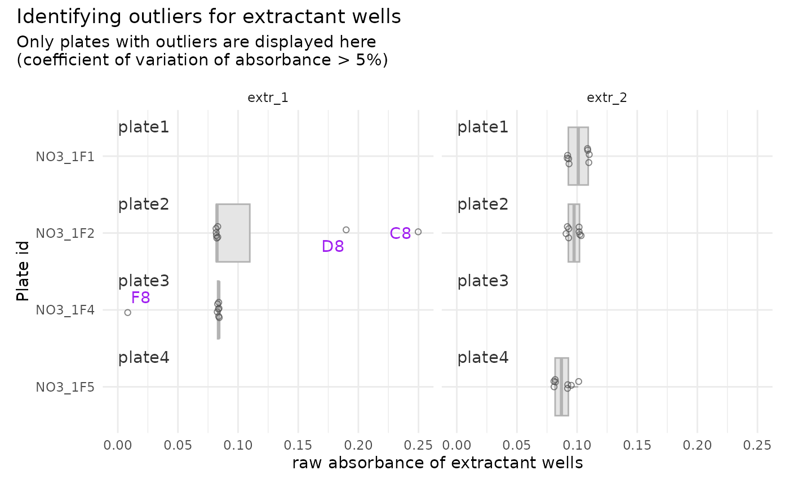

Identify outlier-wells within plates containing suspicious extractant data
Source:R/qc_raw_extr.R
boxplot_outlier_extr.RdIdentify outlier-wells within plates containing suspicious extractant data
Usage
boxplot_outlier_extr(
suspicious_extractant,
max_coeff = 5,
max_plates_per_panel = 10,
max_nb_panels = 4,
nrow = NULL,
ncol = NULL,
plate_id_col = "plate_id",
dataset_col = "dataset",
value_col = "abs",
label_col = "well_id",
map_col = "map",
suppress_warning = FALSE
)Arguments
- suspicious_extractant
A tibble as generated by
suspicious_extr(), can be computed withsuspicious_extr()- max_coeff
User-defined threshold value, defaults at 5%. All plates for which the coefficient of variation for extractant raw absorbance is above this threshold will be considered "suspicious plates". ! Be consistent with previous steps
- max_plates_per_panel
Maximum number of plates shown per panel, used to determine how many panels are needed. Plates are spread as evenly as possible across that many panels. Defaults to
10.- max_nb_panels
Maximum number of panels combined into a single figure. If more panels than this are needed, they are grouped evenly into multiple pages instead, and a named list of plots is returned (one per page) rather than a single plot. Defaults to
4.- nrow, ncol
How panels are arranged within a page, passed through to
patchwork::wrap_plots(). If only one is given, the other is computed automatically (same behavior asggplot2::facet_wrap()). If neither is given, defaults to a single row (nrow = 1), withncolcomputed automatically from the number of panels.- plate_id_col
Name of the column identifying physical plates. Defaults to
"plate_id".- dataset_col
Name of the column identifying the dataset. Defaults to
"dataset".- value_col
Name of the numeric column plotted (raw absorbance). Defaults to
"abs".- label_col
Name of the column used to label individual points. Defaults to
"well_id".- map_col
Name of the column identifying extractants/layers, used for faceting. Defaults to
"map".- suppress_warning
Whether to suppress the warning issued when the output is split into multiple pages (see
max_nb_panels). Defaults toFALSE.
Value
A boxplot generated by ggplot, highlighting information necessary to
create a tibble of wells to be removed with remove_wells(), i.e.,
for each boxplot: plate_ids, well_ids and plate number (corresponding to
the order of plate ids in suspicious_extractant). If the number of
panels needed exceeds max_nb_panels, a named list of plots (one per
page, e.g. page_1, page_2, ...) is returned instead of a single
plot — see max_nb_panels.
Examples
data <- tidy_plates
suspicious_plate_id <- qc_raw_extr(
data, max_coeff = 5, suppress_message = TRUE, suppress_warning = TRUE)
suspicious_extr <- suspicious_extr(
data, max_coeff = 5, suspicious_extr_per_plate = suspicious_plate_id)
#> Joining with `by = join_by(plate_id, map)`
boxplot_outlier_extr(
suspicious_extractant = suspicious_extr,
max_coeff = 5)
 # case with 2 extractants
dbl_extr_plate
#> # A tibble: 480 × 9
#> row column well_id unique_well_id dataset plate_id map abs extr_id
#> <chr> <chr> <chr> <chr> <chr> <chr> <chr> <chr> <chr>
#> 1 A 1 A1 A1_NO3_1F1 Nmin NO3_1F1 Std 0.092 none
#> 2 A 1 A1 A1_NO3_1F2 Nmin NO3_1F2 Std 0.091 none
#> 3 A 1 A1 A1_NO3_1F3 Nmin NO3_1F3 Std 0.110 none
#> 4 A 1 A1 A1_NO3_1F4 Nmin NO3_1F4 Std 0.092 none
#> 5 A 1 A1 A1_NO3_1F5 Nmin NO3_1F5 Std 0.113 none
#> 6 A 2 A2 A2_NO3_1F1 Nmin NO3_1F1 81_t1_z2 0.114 extr_1
#> 7 A 2 A2 A2_NO3_1F2 Nmin NO3_1F2 97_t1_z1 0.107 extr_2
#> 8 A 2 A2 A2_NO3_1F3 Nmin NO3_1F3 89_t1_z3 0.095 extr_2
#> 9 A 2 A2 A2_NO3_1F4 Nmin NO3_1F4 81_t1_z1 0.118 extr_1
#> 10 A 2 A2 A2_NO3_1F5 Nmin NO3_1F5 Std_3_t1 0.167 extr_2
#> # ℹ 470 more rows
(suspicious_extr_per_plate <- qc_raw_extr(
dbl_extr_plate, extr_def = c("extr_1", "extr_2"),
max_coeff = 5, suppress_message = TRUE, suppress_warning = TRUE))
#> # A tibble: 5 × 2
#> plate_id map
#> <chr> <chr>
#> 1 NO3_1F2 extr_1
#> 2 NO3_1F4 extr_1
#> 3 NO3_1F1 extr_2
#> 4 NO3_1F2 extr_2
#> 5 NO3_1F5 extr_2
(suspicious_extr <- suspicious_extr(
dbl_extr_plate, extr_def = c("extr_1", "extr_2"),
max_coeff = 5, suspicious_extr_per_plate = suspicious_extr_per_plate))
#> Joining with `by = join_by(plate_id, map)`
#> # A tibble: 40 × 9
#> row column well_id unique_well_id dataset plate_id map abs extr_id
#> <chr> <chr> <chr> <chr> <chr> <chr> <chr> <dbl> <chr>
#> 1 A 4 A4 A4_NO3_1F1 Nmin NO3_1F1 extr_2 0.11 extr_2
#> 2 B 4 B4 B4_NO3_1F1 Nmin NO3_1F1 extr_2 0.109 extr_2
#> 3 C 4 C4 C4_NO3_1F1 Nmin NO3_1F1 extr_2 0.11 extr_2
#> 4 D 4 D4 D4_NO3_1F1 Nmin NO3_1F1 extr_2 0.109 extr_2
#> 5 E 4 E4 E4_NO3_1F1 Nmin NO3_1F1 extr_2 0.092 extr_2
#> 6 F 4 F4 F4_NO3_1F1 Nmin NO3_1F1 extr_2 0.093 extr_2
#> 7 G 4 G4 G4_NO3_1F1 Nmin NO3_1F1 extr_2 0.093 extr_2
#> 8 H 4 H4 H4_NO3_1F1 Nmin NO3_1F1 extr_2 0.092 extr_2
#> 9 A 8 A8 A8_NO3_1F2 Nmin NO3_1F2 extr_1 0.083 extr_1
#> 10 B 8 B8 B8_NO3_1F2 Nmin NO3_1F2 extr_1 0.082 extr_1
#> # ℹ 30 more rows
boxplot_outlier_extr(
suspicious_extractant = suspicious_extr,
max_coeff = 5)
# case with 2 extractants
dbl_extr_plate
#> # A tibble: 480 × 9
#> row column well_id unique_well_id dataset plate_id map abs extr_id
#> <chr> <chr> <chr> <chr> <chr> <chr> <chr> <chr> <chr>
#> 1 A 1 A1 A1_NO3_1F1 Nmin NO3_1F1 Std 0.092 none
#> 2 A 1 A1 A1_NO3_1F2 Nmin NO3_1F2 Std 0.091 none
#> 3 A 1 A1 A1_NO3_1F3 Nmin NO3_1F3 Std 0.110 none
#> 4 A 1 A1 A1_NO3_1F4 Nmin NO3_1F4 Std 0.092 none
#> 5 A 1 A1 A1_NO3_1F5 Nmin NO3_1F5 Std 0.113 none
#> 6 A 2 A2 A2_NO3_1F1 Nmin NO3_1F1 81_t1_z2 0.114 extr_1
#> 7 A 2 A2 A2_NO3_1F2 Nmin NO3_1F2 97_t1_z1 0.107 extr_2
#> 8 A 2 A2 A2_NO3_1F3 Nmin NO3_1F3 89_t1_z3 0.095 extr_2
#> 9 A 2 A2 A2_NO3_1F4 Nmin NO3_1F4 81_t1_z1 0.118 extr_1
#> 10 A 2 A2 A2_NO3_1F5 Nmin NO3_1F5 Std_3_t1 0.167 extr_2
#> # ℹ 470 more rows
(suspicious_extr_per_plate <- qc_raw_extr(
dbl_extr_plate, extr_def = c("extr_1", "extr_2"),
max_coeff = 5, suppress_message = TRUE, suppress_warning = TRUE))
#> # A tibble: 5 × 2
#> plate_id map
#> <chr> <chr>
#> 1 NO3_1F2 extr_1
#> 2 NO3_1F4 extr_1
#> 3 NO3_1F1 extr_2
#> 4 NO3_1F2 extr_2
#> 5 NO3_1F5 extr_2
(suspicious_extr <- suspicious_extr(
dbl_extr_plate, extr_def = c("extr_1", "extr_2"),
max_coeff = 5, suspicious_extr_per_plate = suspicious_extr_per_plate))
#> Joining with `by = join_by(plate_id, map)`
#> # A tibble: 40 × 9
#> row column well_id unique_well_id dataset plate_id map abs extr_id
#> <chr> <chr> <chr> <chr> <chr> <chr> <chr> <dbl> <chr>
#> 1 A 4 A4 A4_NO3_1F1 Nmin NO3_1F1 extr_2 0.11 extr_2
#> 2 B 4 B4 B4_NO3_1F1 Nmin NO3_1F1 extr_2 0.109 extr_2
#> 3 C 4 C4 C4_NO3_1F1 Nmin NO3_1F1 extr_2 0.11 extr_2
#> 4 D 4 D4 D4_NO3_1F1 Nmin NO3_1F1 extr_2 0.109 extr_2
#> 5 E 4 E4 E4_NO3_1F1 Nmin NO3_1F1 extr_2 0.092 extr_2
#> 6 F 4 F4 F4_NO3_1F1 Nmin NO3_1F1 extr_2 0.093 extr_2
#> 7 G 4 G4 G4_NO3_1F1 Nmin NO3_1F1 extr_2 0.093 extr_2
#> 8 H 4 H4 H4_NO3_1F1 Nmin NO3_1F1 extr_2 0.092 extr_2
#> 9 A 8 A8 A8_NO3_1F2 Nmin NO3_1F2 extr_1 0.083 extr_1
#> 10 B 8 B8 B8_NO3_1F2 Nmin NO3_1F2 extr_1 0.082 extr_1
#> # ℹ 30 more rows
boxplot_outlier_extr(
suspicious_extractant = suspicious_extr,
max_coeff = 5)
